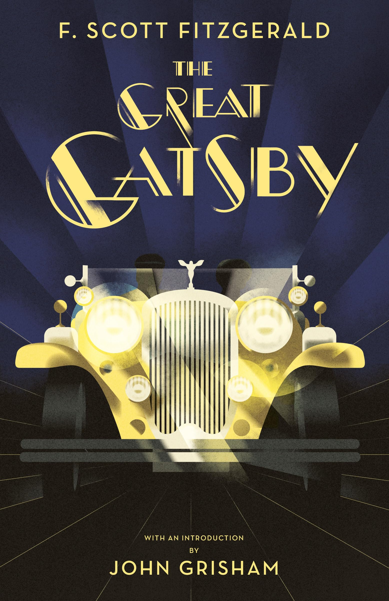
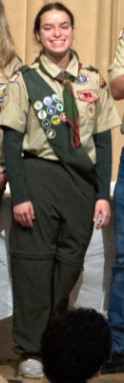
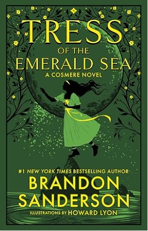

School 2024-2025

Highschool is a whirlwind. It is crazy because I am always busy: traveling, doing homework, participating in scouts and much more! Trying to find time to hang out with my friends is challenging, so lunch is my favorite time of day! I am also enjoying my classes: APCSP, Spanish, and Honors English in particular.
Extracurriculars
I am a scout in Troop 11. I have gone on many camping trips and had many wonderful experiences with my patrols throughout the years. I have been the Troop scribe which involved me writing articles about various camping trips like when we went to Yosemite and Camp Marin Sierra. I am currently a patrol leader because I wanted a new experience, and that has been really fun!


Tress and the Emerald Sea is written by Brandon Sanderson. He is an incredible author becuase he is phenomenal at world building and characterization. This story is one he wrote for his wife with the extra time he got from not traveling during COVID. It is about a girl's journey across the many different oceans of her planet to save her boyfriend. The narration style is hilarous and light hearted, and the story is creative and detailed.